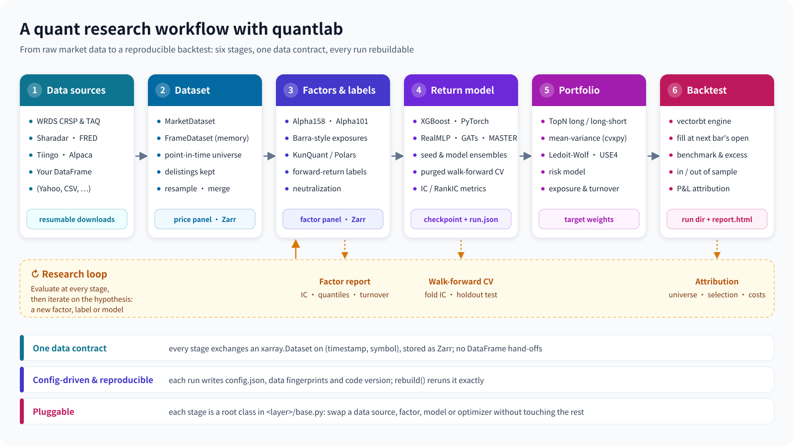

For programmers who know Python but have never seen this repository.
No background in quantitative finance is needed, and nothing about the repository is assumed. This document explains why the code is organised the way it is; quantitative methods appear only where they explain a design choice.
quantlab is a Python backend library for quantitative equity research: it looks for patterns in historical market data, trains models on them, and then simulates "what would have happened had we traded on the model". You can read this document without knowing finance; these few words are enough:
| Domain term | What it means to a programmer |
|---|---|
| Bar | One record per stock per point in time (for example per day): open, high, low, close and volume. One bar is one time step. |
| Factor | A feature computed from market data, such as "how much the price rose over the last 20 days". |
| Label | The target a model predicts, such as "the return over the next 5 days". The y of machine learning. |
| Return model | A model (XGBoost, a neural network, ...) that predicts labels from factors, giving one score per stock per day. |
| Portfolio construction | Turning scores into "what fraction of capital each stock should take": the target weights. |
| Backtest | Simulating trading on those weights over historical data, to see how the account value would have moved. |
Two problems of this domain bear directly on software design. Understand them and you understand half of this repository:
Stack. Python ≥ 3.13 with uv for dependencies; xarray + Zarr as the data format (Zarr is a chunked on-disk format for N-dimensional arrays); factors computed with KunQuant (a library that compiles factor formulas to native code) and Polars; models with PyTorch, XGBoost and pytabkit; portfolio optimisation with cvxpy; trade simulation with vectorbt; optional experiment tracking with W&B or MLflow. There is no web framework and no server process: it is a backend library.
Where the data comes from. Several market-data vendors are supported, such as WRDS (a data platform widely used in academia, which serves the CRSP US stock history and the TAQ tick quotes) and Sharadar (commercial US equity data). A caller can also pass in their own pandas or polars DataFrame.
The project's core value fits in one sentence: one connected pipeline, driven by configuration and reproducible, whose modules are composed through clear input and output contracts so that any stage can be replaced on its own.

| Stage | Root class (in <layer>/base.py) | Input → output |
|---|---|---|
| Acquisition | Acquisition | vendor API → raw Parquet files |
| Dataset | BaseDataset / MarketDataset | raw files → price panel (stored as Zarr) |
| Factor / label | Factor / Forward | price panel → factor panel |
| Return model | BaseModel | factor panel + label panel → prediction panel |
| Risk model | FactorRiskModel | risk characteristics + past returns → a risk (covariance) forecast per bar |
| Portfolio construction | PortfolioConstructor | one bar's predictions + current holdings → target weights |
| Backtest | BaseBacktester | weights + prices → simulation, run directory |
A "panel" is this project's name for data of one fixed shape; chapter 2 is about it.
The code is organised in layers: each sub-package of quantlab/ is one layer. All layers form one ordered chain, and a layer may import only layers earlier in the chain. A deferred import inside a function counts too, and there are no exceptions.
| Layer | Responsibility |
|---|---|
| utils / enums | Generic helpers (atomic writes, date ranges, timers, ...) and shared enumerations |
| core | The component rule: how an object is serialised to a config and rebuilt from it (chapter 3) |
| backend | Storage backends: reading and writing Zarr and Parquet |
| tracking | The experiment-tracking interface and its W&B and MLflow adapters |
| execution | The rules that simulate how the market fills orders |
| runs | Reading and writing run directories: how training and backtest results are stored (chapter 9) |
| universe / dataset | Stock universes; turning raw data into panels |
| config / acquisition | Data-root configuration; downloading from each vendor |
| analysis | Factor reports |
| factor / label / model | Factors, labels, return models |
| risk / portfolio / backtest | Risk models, portfolio construction, backtests |
| api | Convenience functions that take and return DataFrames |
A few positions in the chain may be surprising; each has a reason:
runs comes early, before dataset and model. Both the model layer and the backtest layer write run directories, so it must come before both; and since runs never imports either of them, opening a run directory never loads torch.execution comes early too. The backtest engine uses it to simulate fills, and portfolio construction uses it to work out what is actually held. Both must share one copy of these rules, so it sits before both.risk sits between model and portfolio. A risk model makes no investment decision, and risk analysis does not need the portfolio layer.Every layer follows the same layout; read one and you have read them all:
quantlab/<layer>/
base.py # the layer's root class (BaseDataset, Factor, BaseModel, ...)
config.py # the layer's config dataclasses
xxx.py # framework classes users subclass (FactorKunQuant, ...)
predefined/ # the implementations quantlab ships
_support/ # private helpers; do not import from outside the layer| Convention | Meaning and reason |
|---|---|
Framework modules never import predefined/ | A user's own factor or model depends only on the framework, never on a shipped implementation. Shipped and user implementations stand on equal footing. Enforced by a test. |
The top level of dataset/ and acquisition/ reads like a menu | Every top-level entry of these two directories is one complete, usable thing (a dataset, a vendor); helpers go into _support/. Browsing the directory is browsing the feature list. |
No __init__.py re-exports | Every import spells the full path, e.g. from quantlab.factor.predefined.alpha158 import Alpha158Stock. Each name has one spelling, so grep always finds its definition. |
A few packages' __init__.py is the entry module | For example quantlab/dataset/crsp/__init__.py is the CRSP dataset's main module, with its submodules beside it. The rule is "the __init__ is the module itself", never "the __init__ forwards other modules". |
Some __init__.py files must be empty | A non-empty __init__ runs on every import beneath it. One guarantee ("the credential-free source inspector never loads a vendor client, not even indirectly") depends on a few empty files, and a test checks them (chapter 10). |
| Root classes and configs load no torch | Importing any layer's base.py or config.py does not load torch. A test checks 'torch' in sys.modules in a subprocess. |
A sequence diagram ties the layers together: after backtester.run() is called, each layer talks only to the contracts next to it.
run() (simplified). The whole run sits inside a DataRecorder, which records every dataset and factor read (chapter 9).Layers exchange exactly one kind of data: an xarray.Dataset with exactly two dimensions, (timestamp, symbol) (time × stock), and one variable per field. The project calls it a panel. On disk, every Zarr store (a "store" below) holds exactly one such panel.
<xarray.Dataset>
Dimensions: (timestamp: 400, symbol: 16)
Coordinates:
* timestamp (timestamp) datetime64[ns] 2022-01-03 ... 2023-07-14
* symbol (symbol) <U3 'S00' 'S01' ... 'S15'
Data variables:
adjOpen (timestamp, symbol) float64 49.74 50.21 ...
adjClose (timestamp, symbol) float64 50.13 49.87 ...[T, S] array that is one operation along the symbol axis; on a long table it is a groupby.[T, S, F] torch tensor (F factors) with no conversion, and the deep models are designed around that shape."Only one shape" holds only if code enforces it. Two places do:
get_xarray_dataset(indexes): asked for ["timestamp", "symbol"], both the Zarr and the Parquet backend drop variables on other dimensions and transpose to the requested order; asking for a dimension the data lacks raises ValueError. A dedicated test covers both backends.Many users hold only pandas or polars DataFrames and want one capability (computing factors, say, or a backtest) without adopting the project's stores and configs. quantlab.api gives them functions that take a DataFrame and return one. Design points:
FrameDataset: a real MarketDataset subclass whose panel lives in memory. Factors and backtests therefore run through their public interfaces; the api layer calls no private method, so internal refactoring does not break it.output_dir, the inputs are copied into the result directory so the run can still be rebuilt later.as_xarray=True returns xarray instead.Datasets, factors, labels, models, portfolio rules, backtesters, experiment trackers: almost every object in the project is a component. It is built from one config dataclass and keeps it as its config attribute. Configs nest: a factor's config holds the dataset object it reads, a model's config holds its lists of factors and labels, a backtest's config holds the price dataset and the model.
Every parameter that changes results (a window length, a filter threshold, a fee) is a config field, never a constant in code, for a simple reason: a config can be saved, a constant cannot.
The hard question when serialising nested objects is "how do we know a field holds an object that must be recursed into?". Guessing from key names, or treating any dict with a "name" key as an object, scatters the rule everywhere. This project has one answer: declare it on the dataclass field.
# quantlab/label/config.py (excerpt)
@dataclass(kw_only=True, frozen=True)
class ForwardConfig(FrozenConfig):
factor: "Factor" = component() # this field holds one component
span: int # plain data
delay: int = 1
name: str | None = None # the class's import path, filled in by the object
# quantlab/model/config.py (excerpt)
@dataclass(frozen=True)
class ModelConfig(FrozenConfig):
factors: list["Factor"] = component(many=True) # holds several components
labels: list["Factor"] = component(many=True)
tracker: Tracker = component(default_factory=NullTracker)
hyperparameters: dict ... # a plain dict, never recursed into
...That one declaration drives three things:
label = Forward(ForwardConfig(factor=momentum, span=5))
saved = label.get_config()
saved["factor"]["name"] # 'quantlab.factor.predefined.momentum.Momentum'
saved["factor"]["dataset"]["name"] # 'quantlab.dataset.spot.SpotKlineDataset'
rebuild(saved) == label # Trueconfig_cls) is ever rebuilt, so a tampered JSON file cannot use rebuild to call an arbitrary importable function."shared_as" key naming the first; one rebuild call turns them back into one object, so the rebuilt object graph matches the saved one.Every config class derives from FrozenConfig and is a frozen=True dataclass that cannot be changed after creation. An object "completes" the config it is given (it records its class name, resolves the list of factor names, ...) by returning a completed copy, never by changing the one the caller passed in. The next chapter explains why that matters.
The pipeline reads date ranges everywhere: a model reads 2016–2021 factors to train, a backtest reads 2023–2024 prices. The rule: a date range is always an argument of the read method, and is never written into another object's config.
panel = dataset.panel(start, end, symbols=None, variables=None) # a dataset answers a query
values = factor.read(start, end) # read values already computed into the factor's store
values = factor.compute(start, end) # compute from the inputsA natural-looking alternative is to set config.start_date / end_date on the object and then call read(), with the factor passing the dates on to its dataset and the dataset caching data for the new range. In a data pipeline the trouble with this is shared mutable state:
warmup_bars field. The dataset answers "which bar lies N bars before this date". Counting bars avoids "30 days" meaning different things on daily and minute data.read and compute two methods, not "read if there is a store, compute otherwise"?
With one method choosing automatically, the caller could not tell whether a value was read or computed, and the data fingerprints of chapter 9 need to know exactly that.One long-term goal is editing and testing factors and models online, so "how much code does a new factor or model take?" is a core design metric. The general answer: the root class implements the whole lifecycle (the template method pattern), and a subclass fills in a few hook methods.
| Intermediate class | A subclass implements only | Characteristics |
|---|---|---|
FactorKunQuant | _get_factor_func(): return a KunQuant computation graph | A factor is a declarative graph of operators (Builder / Input / Output / operators), compiled to native code just in time and run on several threads. The same graph computes a whole history in batch or updates bar by bar in streaming mode, so a factor written for research can later run on live data. The main backend. |
FactorPolars | _get_factor_lazyframe(lf): return a lazy Polars query | Batch only. For formulas easier to express as table operations; a complement to KunQuant. |
class Momentum(FactorPolars):
"""N-bar price momentum, Close_t / Close_{t-n} - 1."""
def _get_factor_lazyframe(self, lf):
n = self.config.kwargs.get("n", 20)
return lf.select(
"timestamp", "symbol",
(pl.col("Close") / pl.col("Close").shift(n).over("symbol") - 1).alias(f"momentum_{n}"),
)
# everything else (reading by date, warm-up, storing, extending, resampling, recording
# fingerprints) is done by the root class Factor(Illustrative; the actual implementation is quantlab/factor/predefined/momentum.py.)
The root class Factor provides one lifecycle: compute(start, end) computes; build writes a store; extend(end) appends new dates; read(start, end) reads the store; resample(freq, how) aggregates to coarser bars (minute bars to daily, say); analyze() writes a factor report.
FactorKunQuant pads the symbol axis with all-NaN placeholder stocks to a multiple of 8 and cuts them off afterwards, but only when sys.platform == "darwin". On Linux, 4, 5, 7, 8, 12 and 16 stocks were measured to work, so nothing is padded there. Padding happens only on the platform that needs it, and the measurement is written down in the docs.Mathematically a label is a factor moved forward in time: the return over the next 5 days is the value, 5 days later, of a "return over the last 5 days" factor. So labels get no class hierarchy of their own; a wrapper turns any factor into a label:
label = Forward(ForwardConfig(factor=any_factor, span=5, delay=1))
label.lookahead_bars() # 6 = delay + span: the label at t reads data up to 6 bars after tForward asks the wrapped factor for lookahead more bars, shifts the panel and trims it back to the request. It owns no store, so one factor store serves as a feature directly and, wrapped, as a label. A model accepts only Forward objects as labels and refuses them as features: whether something is a feature or a label depends on how it is used, not on its class, and a type check prevents mistakes.
Because "how many bars does a label look ahead" has one source, the label object, model splits, factor reports and the backtest's in/out-of-sample line all read it from there instead of each computing their own. The backtest engine also declares its fill delay, fill_delay_bars, and a backtest refuses to run when a label's delay differs from it.
The steps of one train() call; only "fit" belongs to the concrete model:
train(). Blue: implemented by the base class; orange: the concrete model's hooks.The division of labour: the base class owns the data contracts, the hooks own the learning strategy. Optimiser, loss and what one training step does are up to the concrete model; warm-up, purge, cross-validation folds, missing-label masks, metrics on the raw label, the checkpoint format and putting predictions back into [T, S, L] (time × stock × label) belong to the base class.
A torch model returns a standard torch.utils.data.Dataset from _dataset() to decide what one training step sees. The default is the whole cross-section of one bar (all stocks enter the network together, which suits models with attention between stocks); another option is one stock's time series, in the style of Qlib (Microsoft's open-source quantitative research platform). The key constraint: every sample carries where = (t_idx, s_idx), so the base class puts predictions of any shape back into [T, S, L] with the same code, and refuses a set of predictions that misses or repeats a cell.
Deep models are not sized to a fixed set of stocks, because index membership changes every month: a network whose input is a fixed S × F could not predict a newly added stock. The network maps [S_t, N, F] (stocks at the bar × history length × factors) to [S_t, L], and S_t may differ from bar to bar. A stock without a label stays in the cross-section as context and is left out of the loss.
Evaluation loaders never drop the last partial batch; evaluation runs under no_grad and eval(); a one-stock cross-section works; training shuffles bars; rows with a missing label stay in the feature panel; the purge covers the label lookahead only, not the feature window. Each has a test.
The portfolio-construction root class PortfolioConstructor asks for one method, construct(context); the risk root class CovarianceEstimator asks for estimate(...) (the covariance of stock returns: the matrix describing how stocks' risks move together).
Both return one InputDeclaration value from declared_inputs(): how much history they read at a decision, which factors, which risk model. A rule that holds an estimator merges the two with InputDeclaration.merged. Describing every input need as one value means a new kind of input is a new field on that value, not a new method on two base classes forwarded layer by layer.
The mean-variance optimiser (a classic method that trades expected return off against risk) also opens two extension points: reference_weights (measure risk relative to a reference portfolio) and risk_constraints (constrain the risk term). The base optimiser leaves both unused; ActiveRiskOptimizer in scripts/active_risk.py is built on them, and a test checks that it works.
Python can express an interface in two ways: an abstract base class (by inheritance) or a typing.Protocol (structural typing: having the methods is enough). The project has an explicit rule for which to use:
A backtester needs a "signal source" for predictions. A single model (a BaseModel subclass) obviously qualifies, but so must an ensemble (such as SeedEnsemble: one config trained under several random seeds and averaged). An ensemble inheriting BaseModel would inherit a training loop, cross-validation logic and checkpoint rules it does not have, and would have to stub each one. So the backtest layer defines a Predictor protocol:
ModelConfig: an ensemble may combine quite different models (an XGBoost and a neural network, each with its own factors), which have no single config to expose.BaseModel backtests exactly like the model it wraps, and an ast scan of the source checks that the backtest layer reads no model attribute outside the protocol.| Not adopted | Reason |
|---|---|
| A protocol per layer, the root class as its default implementation | Every other seam has one implementation. A protocol there would restate the root class's public methods: one more declaration to keep in step. |
All protocols in one protocols.py | A protocol owned by no caller drifts towards a copy of the implementing class's public surface. |
| Protocols at the level of the template methods | Root classes are not just signatures; they carry invariants. The dataset and factor roots own reading, warm-up, resampling and the store; PortfolioConstructor.decide owns the no-look-ahead and locked-position checks (chapter 7). A protocol there would hand the invariants to every implementer. |
BaseEnsemble is a class of its own that composes models and satisfies Predictor. Its combination rule needs one idea: the ensemble's labels are the union of its members' labels, and each label is combined from the members that predict it. With several members on one label, each is standardised per bar and the results averaged; with one member, its prediction passes through unchanged.
"Several seeds", "different models" and "one model for returns, another for volatility" are then one rule: no mode switch and no second composition class. The cost: a prediction's units depend on how many members predict it (averaged predictions are standardised scores, passed-through ones keep their units), so the protocol carries a per-label label_scales, and a rule that needs return units must check it.
Chapter 0 called look-ahead a silent bug. This chapter shows how the project rules it out with function signatures and data structures rather than developer discipline.
There are two ways to design the interface that turns predictions into weights:
# A. Whole-panel interface: every date at once
weights = selector.select(scores_panel, next_fill_price_panel, rebalance_mask)
# B. Per-bar interface: one bar's context at a time
weights_t = rule.construct(context_at_t)The signature of A lets an implementation read past t; an implementation of B cannot even get hold of future data. quantlab uses B, for two more reasons: an optimiser solves one problem per rebalance anyway, and a future event-driven backtester or live executor can call the same method unchanged.
PortfolioContext is a dataclass that describes one bar:
@dataclass
class PortfolioContext:
timestamp: pd.Timestamp # the bar decided on; the weights returned fill at the next bar
predictions: xr.Dataset # each label's prediction at the bar, on symbol only
tradable: xr.DataArray # whether each stock can trade at the bar, judged from t and before
current_weights: xr.DataArray # what is actually held
returns: xr.DataArray | None # a bounded window of returns up to t
staleness: xr.DataArray | None # bars since the last real price (grows during a halt)
factors: xr.Dataset | None # values at t of the factors the rule declared
risk_exposures: xr.Dataset | None(Fields and comments abridged; the full definition is in quantlab/portfolio/base.py.)
A portfolio rule implements construct, but callers always call decide, a base-class method that subclasses do not override. It wraps construct and does two things:
PortfolioConstructionError (an optimiser with no solution, say) into "hold the current position at this bar" and records why, instead of crashing the whole backtest;ValueError.decide(). A rule's author writes only construct; failure handling and validity checks are done once, by the base class.This is what chapter 6 meant by "root classes carry invariants": any new rule anyone writes is protected by these checks as long as it is called through decide.
An example of a harmless-looking mistake: define "can this stock be picked at t" as "it has a fill price at t+1". Every target weight is then guaranteed to fill, the code is simple, and target weights equal holdings. But it tells the strategy at t which stocks will halt or delist at t+1, so it never buys the day before a halt. That is an optimistic bias, and it cannot be computed in live trading at all. quantlab instead:
ExecutionBook replays fills, rejections, delisting settlements and the cash limit with exactly the rules the backtest engine uses. Those rules live in one place, quantlab/execution/rules.py, down to vectorbt's numeric details (floating-point comparison, how amounts are added).What a decision may read is assembled by one module, DecisionInputs in quantlab/portfolio/decision_inputs.py, which serves both research backtests and live executors. The live executor is a separate repository by the same author, quantlab-ibkr, which connects quantlab's strategies to the broker Interactive Brokers.
| Method | Use |
|---|---|
weights(predictions) | Research backtest: decide every bar of a whole panel |
context(t, predictions, current_weights) | Live executor: build one bar's context; the executor supplies the holdings of its own account |
rebalances(t) | The schedule: is t a rebalance bar |
from_run(run_dir) | Rebuild a recorded backtest's decision inputs from its run directory, without loading the model |
It is the only code that builds a PortfolioContext. Each bar reads only the last history_bars raw prices (a number the rule declares), forward-filled within that window only. So a decision depends only on what is known at t, never on where the caller's history starts. A live executor has no natural start date, which makes this essential.
B F Bᵀ + diag(D), is one value type of the risk layer, FactorRiskForecast, used by portfolio optimisation, risk attribution and model tests alike; the rule for "which stocks this forecast covers" is written in that one place.Downloading a whole market takes thousands of requests and can run for hours; converting raw data into Zarr is a long job too. The requirement: kill the process at any moment and a re-run carries on, never re-fetching finished work and never skipping unfinished work.
| Ledger | What it records | The property it guarantees |
|---|---|---|
| Watermark | The date range of each stock already on disk | A watermark is written only after a whole batch is fetched and written. A stock interrupted halfway has no watermark and is fetched again. |
| Page ledger | Progress of one multi-stock request that the vendor pages: pages fetched, the next page's token, the files each page was written to | See the list below. |
| Chunk ledger | The time windows a Zarr conversion has appended | The symbol axis is fixed before the first window so all windows line up by column; when ledger and store disagree, resuming is refused, trusting neither alone. |
Each design point of the page ledger guards against one specific failure:
part-{batch_key}-{page:05d}.pqt, where batch_key hashes the vendor, frequency, dates and the sorted stock list, with no timestamp or random part. Re-fetching a page overwrites the same file, so a retry can waste requests but never duplicates rows.ValueError instead of looping and writing a new shard every round.write_json_atomically: to a temporary file in the same directory, then flush + fsync, then os.replace over the target. The same directory, because a rename is atomic only within one file system. After a crash there is only ever the complete old file or the complete new one..{name}.partial and renamed into place once every artifact has succeeded; any exception, KeyboardInterrupt included, removes the staging directory. A result directory is complete or absent..widening.tmp beside it and swaps by two renames; a full rebuild renames the old store to .superseded.tmp and renames it back on failure. If even that fails, it logs instead of raising, so as not to hide the real error, and the log names both copies.data_root is required, with no default: run from a code checkout with no data directory, it must never report success against a tree it never read.Tick quote data is huge: ten years of NBBO (the US national best bid and offer) for the S&P 500 is about 9 TB of CSV, while the training server reaches WRDS at only 5–6 MB/s in total, so downloading ticks and resampling locally would take more than three weeks. Measured on one day of 96 stocks: aggregated into one-minute bars by SQL on the WRDS server, 1.7 MB returns in 63 s; the raw ticks are 328 MB in 110 s.
So there is a separate data type, nbbo_bars: SQL on the server does the aggregation, reproducing all 13 variables of the local resampler, and the resulting store has the same layout as the local path's. The local tick path is kept as the reference the SQL is checked against, and the two agree bar for bar.
Whether a result can be reproduced depends on three things: config, data and code. Recording all three is the job of one layer, quantlab/runs. A training or a backtest is a "run", and everything it produces goes into one "run directory".
quantlab/runs/directory.py is the mechanism both kinds share: one run.json header and format version; run.json written last as the completion marker; writing into a staging directory and renaming it; paths inside the directory always relative (a run copied from the server to a laptop opens as it is); an unknown format version refused with a message to re-run; and open_run(path), which dispatches on kind to the right reader through a fixed kind-to-class table, importing the class only when it opens a run.
The rule: files of a run directory are read and written only through quantlab/runs, and no other code may contain their names. With file names and JSON keys scattered over writers and readers, two definitions drift apart, and callers guess the layout with things like Path(checkpoint).parent.parent, which breaks as soon as the nesting changes.
A test enforces it: it scans the library, the examples and the Python code in the docs (docstrings included), and fails on a string literal naming a file such as run.json, or on walking two levels up from a checkpoint with .parent.parent. Callers use typed accessors only:
run = BacktestRun.open(run_dir)
run.window, run.data_fingerprint, run.trained_run() # typed properties, never JSON indexed by string keysOne way to learn what data a run used is to have the backtester enumerate every input to record. Nobody can enumerate them all: tradability data, the price history a rule reads before the window, each input of a merged dataset, every member of an ensemble... and the backtester would have to know factor internals.
quantlab does the opposite: no enumeration; record data where it is read.
-0.0 becomes 0.0, or two reads of identical data could hash differently.calendar() and are not recorded; reads to exclude are wrapped in unrecorded().Every run.json also has a code part:
git: the quantlab commit and whether tracked files had uncommitted changes (context only, never compared);modules: the SHA-256 of the source file of every class in the component tree and of its base classes, marked as a framework or a component module, with the component paths using it;libraries: the versions of numpy, pandas, xarray, polars, xgboost, torch, vectorbt, KunQuant and cvxpy.A rebuild compares them item by item and warns on each difference, listing component modules before framework modules. Data and code follow one policy: warn, never block. Revised data must still be backtestable, and a check that blocks only teaches people to work around it.
run = BacktestRun.open(run_dir)
again = run.rebuild_backtester() # rebuild the whole component tree from config.json
again.run() # recompute fingerprints and code record, compare, warn on differences
inputs = DecisionInputs.from_run(run_dir) # live executor: rebuild the decision inputs without the modelThe project depends on several heavy or sensitive libraries and services. The principle: each external dependency is imported by exactly one module, and a test enforces it.
| Dependency | Its one importing module | Reason |
|---|---|---|
| vectorbt | backtest/engine_vectorbt.py | The engine is replaceable (an event-driven engine is planned); the numeric rules holdings replay needs live separately in execution/rules.py. |
| cvxpy | portfolio/predefined/mean_variance.py | Only the mean-variance optimiser needs a solver; other rules and the root classes never load it. |
| wandb / mlflow | tracking/wandb.py / tracking/mlflow.py | See 10.1. |
| torch | the torch part of the model layer | No root class or config of any layer loads torch; a subprocess test checks it. |
| Vendor clients | acquisition/<vendor> | See 10.2. |
tracker field, serialised by class path like any other component); the default is a null tracker that does nothing. Unless a config names one, no data leaves the machine;start_run (a context manager), log, summarize, update_config, log_table, log_file;config.json); passing a tracker object to constructors without serialising it (a rebuilt run would silently stop tracking); a contextvar holding a "current run" (hidden global state, hard to reason about with deep-copied models).SourceInspector answers "what can this project download", and must be importable without loading any vendor client. It is checked by an AST scan of its own source plus a run-time look at vars(). Neither can see an import pulled in by a package __init__.py, so the three __init__.py files on its import chain must stay empty, and a test asserts it.On macOS, xgboost's wheel links Homebrew's OpenMP library (libomp) while torch bundles its own, and a process using both crashes or deadlocks. Only OMP_NUM_THREADS=1 was measured to be safe (preloading libomp crashes torch instead). tests/conftest.py sets it on macOS before any import, and a test checks that the setting is there; Linux is unaffected.
Besides ordinary functional tests, the suite has a set of tests whose job is to guard architectural rules. A rule written only in a document fades; a rule written as a test does not.
| Test file (under tests/) | The rule it enforces |
|---|---|
test_layer_layout.py | Every quantlab import (function-level ones included) follows the layer order; every module belongs to a layer; root classes load no torch; framework modules never import predefined; cvxpy, wandb and mlflow each have one importer; predefined/__init__.py is empty. |
test_run_ownership.py | Run-directory file names appear only in quantlab/runs; no .parent.parent guessing. |
test_backtest_predictor_protocol.py | A non-inheriting wrapper backtests identically; an object missing a member is refused; the backtest layer reads protocol members only. |
test_source_inspector.py | The credential-free inspector reaches no vendor client; three __init__.py files are empty. |
test_data_recorder.py and others | Recording and comparing data fingerprints; only the data, factor and fingerprint modules ask a factor what it reads. |
test_code_record.py | The content and comparison of code records. |
test_undefined_names.py | Undefined names and unused imports, checked with ruff. |
test_extensibility_contract.py, test_risk_contract.py, test_tracker_contract.py | The contract of each extension point: what a user's new implementation must and need not provide. |
Reference files (such as topn_reference.npz) | Numbers are bit-identical before and after a refactor; regenerated only when the computation's meaning changes on purpose. |
quantlab.model.base is among the modules it checks, so a wrong path cannot make it pass forever on an empty scan.docs/adr/ holds 28 architecture decision records (ADRs). Each uses one format: what was decided, why, which other options were considered and why they were not taken, and the consequences. The "options not taken" part is the shortcut to understanding this repository: next to almost every design that looks odd at first sight is the reason the more obvious one does not work. Most of the "why" in this document comes from there.
| Topic | Where in this document |
|---|---|
| Panels are read by date range, never by rewriting another object's config | Chapter 4 |
| A label is a forward-shifted factor; splits purge by its lookahead | 5.2 |
| Torch models choose their sample shape; the base keeps the data contracts | 5.3 |
| The backtester depends on a Predictor protocol; when to define a protocol | Chapter 6 |
| The api layer is a DataFrame-in, DataFrame-out facade | 2.4 |
| Per-bar decisions; decision and execution apart; one assembly of decision inputs | Chapter 7 |
| The tracker is chosen by config and off by default | 10.1 |
| Run-file ownership, component declarations, data fingerprints and code records | Chapters 3 and 9 |
| Layers form an ordered dependency chain | 1.2 |
| A factor risk model is a per-bar data product | 7.4 |
| NBBO bars are aggregated on the server | Chapter 8 |
CONTEXT.md at the repository root is a glossary: it fixes which word names each concept and lists the synonyms to avoid. For example, a "panel" is xarray data shaped (timestamp, symbol) while a "frame" is the caller's DataFrame; a "weight" is the target fraction asked for while a "holding" is the fraction actually held after fills; "lookahead" and "span" mean different things. Code, docs and scripts all use one vocabulary; appendix B lists part of it.
The project is not in production yet, so its policy is explicit: when a breaking refactor is needed, do it directly: no config migrations, no compatibility layers, no old names kept. A config or run directory in an old format is refused with a message to re-run or retrain. The benefit is that the code holds no layers of forwarding and compatibility branches, and changing the architecture is cheap; the cost is that past runs must be recomputed before they open again.
Larger changes follow "question the design hard, then write a spec (a GitHub issue), then split it into small, separately committable tasks, then implement". Research experiments are recorded in a separate private repository, one directory per experiment with its setup, the scripts actually run and the conclusions, apart from the library code.
No design is free. The table puts the main decisions of this document side by side: the middle column is what was gained, the right column what was paid.
| Decision | Gained | Paid |
|---|---|---|
| Layers exchange only xarray panels | One representation of missing data; vectorised cross-sections; models consume it directly; Zarr loads on demand | DataFrame users need a facade; dense panels cost memory on sparse data (many years of the whole market, many delisted stocks) |
| Config dataclasses + component declarations | Every run serialisable and rebuildable; the component tree is walkable | Every configurable object needs a config class; moving a class invalidates saved configs |
| Reads are queries with arguments; configs frozen | No shared mutable state; one dataset serves many users; several inputs can merge | Every read reopens the store; callers pass their own dates |
Labels are a Forward wrapper | Any factor can be a label; one source for the lookahead; automatic purge | Bars lost at every split; the wrapped factor must use only data up to t, which Forward cannot check |
| Per-bar decision interface | The future is structurally invisible; research and live trading share one method | No whole-panel vectorised shortcut; slower |
| Rejections and delistings simulated faithfully | No optimistic bias; computable live | Target weights ≠ holdings: holdings must be replayed and recorded separately |
| A protocol only when a second implementation appears | Small interfaces; invariants stay in root classes | No static type checking; protocols rely on run-time checks and tests |
| Run directories as a layer | File names defined once; one format; directories movable | A new kind of run artifact must go through the runs layer |
| Fingerprints recorded at the read seams | Nothing missed; zero cost for new components | Each request is read again and hashed at the end: extra I/O |
| Differences warn, never block | Revised data can still be backtested | Warnings can be ignored |
| Training data on GPU / in RAM | Reads one to two orders of magnitude faster (measured) | Data larger than RAM needs another design |
| No backward compatibility | Fast refactors; no compatibility layers in code | Old runs must be recomputed to open |
| Architecture rules written as tests | Rules are neither forgotten nor quietly broken | More test code than library code; changing the architecture means changing the guard tests too |
DecisionInputs and the fill rules are reused directly by the live executor.DecisionInputs.context are ready for it.README.md and docs/user-guide/concepts.md: the overall concepts.CONTEXT.md: the glossary, to agree on words first.tests/test_layer_layout.py: every layer and its order at a glance.quantlab/core/component.py: the component rule, serialisation and rebuilding.quantlab/dataset/base.py → quantlab/factor/base.py → quantlab/label/forward.py: how data is read.quantlab/model/base.py, then torch_model.py / library_model.py: template methods and hooks.quantlab/portfolio/base.py and decision_inputs.py: the no-look-ahead interface design.quantlab/backtest/base.py: the Predictor protocol and the backtest workflow.quantlab/runs/directory.py and record.py: the reproducibility machinery.docs/adr/: whenever you ask "why is it written this way".docs/developer-guide/extending.md: writing your own data source, factor, model or portfolio rule.| Term | Meaning |
|---|---|
| panel | An xarray.Dataset with exactly the dimensions (timestamp, symbol) |
| frame | The caller's long pandas / polars table; appears only in the api layer |
| store | A Zarr directory on disk holding one panel |
| component | An object built from one config dataclass, with get_config / rebuild |
| warm-up | Bars read before the first requested bar so rolling computations have enough history; counted in bars |
| lookahead / span / delay | How many bars after t a label at t reads (= delay + span) / how many bars it accumulates over / the bars between the signal and the first bar counted |
| purge | Dropping the last lookahead bars of the earlier segment at every split |
| Predictor | The protocol of a signal source a backtest can use; models and ensembles satisfy it |
| weight / holding | The target fraction asked for / the fraction actually held after fills |
| locked position | A stock held but not tradable at the bar; a rule must keep its weight |
| decision inputs | Everything a rule may read at t except holdings; assembled only by DecisionInputs |
| trained run / backtest run | The two kinds of run directory, each described by its run.json |
| data fingerprint / code record | Digests of the data a run read / digests of the code it used, plus library versions |
| tracker | W&B, MLflow, or nothing (the default) |
From the repository README (examples/yahoo_us_equity.py; no account needed, about 20 seconds). Every step builds a config object and calls a public method:
# 1. Data: a DataFrame becomes an in-memory MarketDataset
prices = FrameDataset(stocks_df, columns=COLUMNS)
# 2. Factor and label, both built from a FactorConfig; Return is a ready-made return label
factor = Alpha158Stock(FactorConfig(dataset=prices, warmup_bars=60, mode="batch",
data_columns=ADJUSTED, file_path=".../alpha158.zarr"))
label = Return(FactorConfig(dataset=prices, warmup_bars=0, mode="batch",
data_columns=("adjOpen",), kwargs={"n_forward_periods": 5},
file_path=".../ret_5.zarr"))
# 3. Model: dates are set on the outermost object only and passed down with each read
model = XGBoostRegressor(ModelConfig(
factors=[factor], labels=[label], model_save_dir=".../models",
hyperparameters={"num_boost_round": 200, "max_depth": 3, "eta": 0.03},
train_start="2016-01-01", train_end="2021-12-31",
test_start="2022-01-01", test_end="2022-12-31", ...))
model.collect()
checkpoint = model.train() # writes a trained run directory
# 4. Portfolio rule and backtest: the rule is a component in the config
backtester = USEquityCrossectionSelectStockVectorBt(CrossSectionBacktestConfig(
price_dataset=prices, model=..., model_mode="load", checkpoint=str(checkpoint),
start_date="2023-01-01", end_date="2024-12-31", output_dir=".../backtests",
rebalance_periods=5,
constructor=TopNConstructor(TopNConfig(direction="long_only", top_n=10)),
))
result = backtester.run() # writes a backtest run directory
# 5. Reproduce: rebuild from the run directory and run again, same equity curve
BacktestRun.open(run_dir).rebuild_backtester().run()Compiled from the repository's source code, architecture decision records (docs/adr/), glossary (CONTEXT.md), developer documentation and tests. Every measured figure is quoted from the repository's documentation; none was measured for this document. Illustrative code is marked as such; other snippets are taken from the repository.